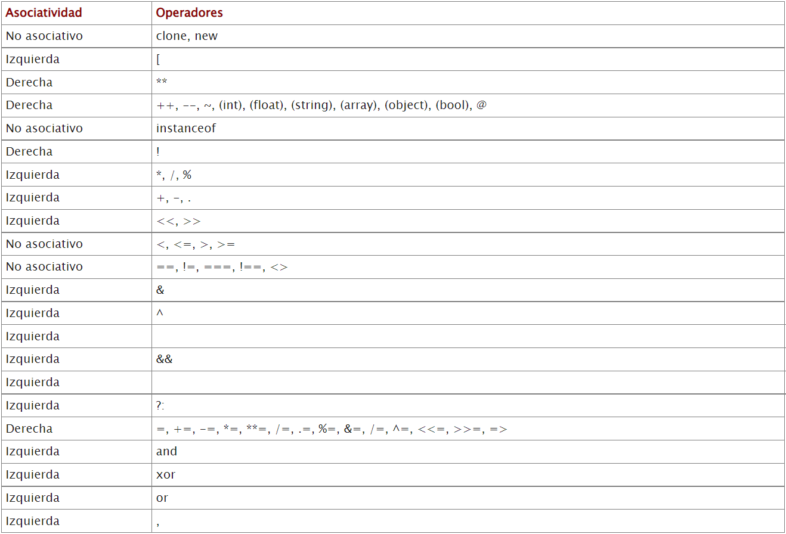
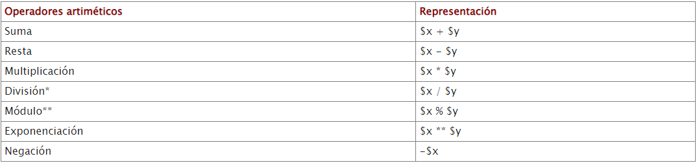
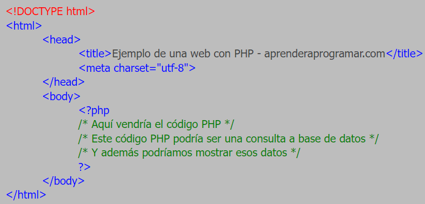
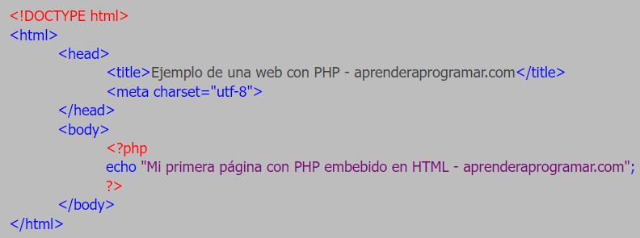
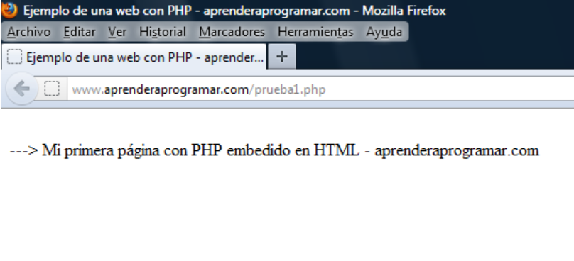

Símbolos
Precedencia de operadores
Los operadores son los símbolos que construyen las reglas de PHP, uno de ellos es la precedencia de los operadores.
En PHP sigue casi las mismas reglas que en matemáticas, por ejemplo: multiplicación y división preceden a suma y resta, los paréntesis fuerzan una precedencia, etc.
Cuando tienen la misma precedencia, su asociatividad decide cómo ordenar los operadores. Por ejemplo el operador suma + tiene asociatividad izquierda, por lo que la operación 1 + 2 + 3 sumará primero 1 y 2, y después 3 => (1 + 2) + 3. Por el contrario, el operador = tiene asociatividad derecha, por lo que $x = $y = $z se agrupa de forma $x = ($y = $z).
Lista de operadores ordenados por precedencia:

Operadores aritméticos
Otros símbolos serían los operadores aritméticos en PHP, son los mismos que en las matemáticas:

*División devuelve un (int) si $x y $y son divisibles, o (float) si no lo son.
Sintaxis
Esqueleto de los programas
Un archivo PHP normalmente suele contener HTML y trozos de código PHP. Por ello antes de estudiar PHP es necesario haber estudiado HTML. A veces, se dice que PHP es un lenguaje “embebido” en HTML, es decir, incrustado en código HTML. Todos los fragmentos de código PHP deben comenzar con la siguiente cadena de caracteres:
Los símbolos se dice que son los delimitadores del código PHP. Normalmente, una página PHP básica sería algo así:

En este código podemos identificar los siguientes elementos:
- La primera línea es una etiqueta relativa a la versión/variante de HTML que declaramos usar. Esta primera etiqueta no es estrictamente necesaria. Sirve únicamente para indicar qué estándar de HTML es el que declaramos usar.
- Las etiquetas de apertura y cierre de html que delimitan el código HTML.
- Las etiquetas de apertura y cierre head que delimitan la cabecera del código HTML.
- Las etiquetas body que delimitan el cuerpo del código HTML y que es donde suele ir el contenido central de un documento HTML (texto, imágenes, formularios, etc.).
- Dentro de las etiquetas body, además de código HTML, podemos tener código PHP embebido. En este caso hemos incluido únicamente un fragmento de código PHP, pero en el cuerpo del documento HTML podríamos incluir diversos fragmentos de código HTML mezclados con diversos fragmentos de código PHP. Cada fragmento de código PHP tiene que ir escrito con sus delimitadores.
Esta estructura no se repite siempre. Por otro lado, decir que es habitual que el código PHP vaya embebido dentro de código HTML en un archivo con extensión .php, pero como ya hemos visto, un archivo con extensión .php podría contener exclusivamente código PHP.
Se muestra a continuación un ejemplo de código como HTML en PHP:

Para proyectarlo como página, primero se tiene que guardar el archivo y después escribir en el navegador la dirección web correspondiente al archivo.
El resultado debería ser este:

No es tan diferente escribir HTML con PHP que con el mismo HTML.
Aplicación a descargar para editar y ejecutar
Miles de programadores coinciden en destacar a Netbeans como el mejor IDE para PHP. Tiene un gran número de funciones, es gratuito y tiene soporte para idiomas como el inglés, el japonés, el ruso, el portugués brasileño y el chino simplificado.

Paradigma
PHP es un lenguaje de programación cuya sintaxis es heredera de C, pero a diferencia de este último, PHP es un lenguaje de tipado dinámico, multiparadigma e interpretado. Se ha dotado a PHP con un soporte amplio de paradigmas de programación.
Ejemplo
Clase En PHP
Una clase, es parte de la Programación Orientada a Objetos (POO, o OOP en inglés) en PHP. Una clase es un objeto.
Archivo: main.class.php
Código:
#Archivo de la clase
class WordClass {
ㅤㅤㅤvar $text;
ㅤㅤㅤfunction __construct($number) {
ㅤㅤㅤㅤㅤㅤㅤㅤecho "Empezo la clase: ".$number."";
ㅤㅤㅤ}
ㅤㅤㅤfunction cambiarWord($nuevotexto) {
ㅤㅤㅤㅤㅤㅤㅤㅤecho "El texto ".$this->text." ha sido remplazado por: ";
ㅤㅤㅤㅤㅤㅤㅤㅤ$this->text = $nuevotexto;
ㅤㅤㅤㅤㅤㅤㅤㅤecho $this->text;
ㅤㅤㅤㅤㅤㅤㅤㅤecho "";
ㅤㅤㅤ}
}
?>
Archivo: index.php
Código:
#Archivo principal donde llamaremos a la clase
include("main.class.php);
$Palabrerio = new WordClass(1); //Mostrará "Empezo la clase: 1" Ya que pasamos el numero 1 como parametro
$Palabrerio->cambiarWord("Hola como te va");
$Palabrerio->cambiarWord("Lalala");
?>